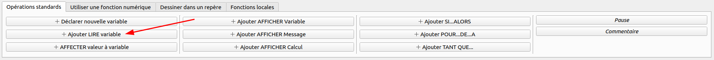
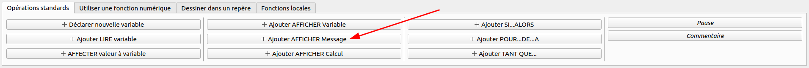
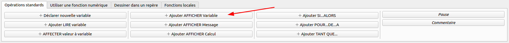
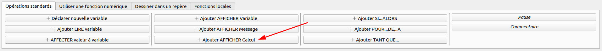

Une variable est un espace mémoire dans lequel on peut stocker une valeur.
Pour déclarer une variable, il faut préciser son type et son nom.
Le type d'une variable définit la nature de la valeur qu'elle peut contenir.
Le nom d'une variable est un identifiant qui permet de la désigner.
Déclarer une variable sur AlgoBox
Règles de nommage
Dans un programme informatique, le développeur pourra nommer comme il le souhaite de nombreux éléments (variables, fonctions, propriétés, méthodes, librairies…).
Il est important de respecter certaines règles de nommage afin de rendre le code plus lisible et plus compréhensible.
Le nom d'une variable doit commencer par une lettre
Le nom d'une variable ne doit pas contenir d'espaces.
Le nom d'une variable ne doit pas contenir de caractères spéciaux.
Le nom d'une variable ne doit pas être un mot réservé du langage.
Le nom d'une variable doit être compréhensible facilement (ex: dateNaissance).
Le nom d'une variable respecte la casse (datenaissance != dateNaissance)
Règles de nommage
snake_case 🐍 : Tout en minuscules et mots séparés par des underscores
camelCase 🐫 : La première lettre est en minuscule et les mots suivants commencent par une majuscule
PascalCase 👨 : La première lettre est en majuscule et les mots suivants commencent par une majuscule
kebab-case 🍢 : Tout en minuscules et mots séparés par des tirets
Il est possible de choisir le type de nommage que l'on souhaite, mais il est important de conserver le même dans l'ensemble de son programme.
Certains langages de programmation recommandent parfois un type de nommage bien précis (PHP Naming Convetions).
Types de variable
Il existe de nombreux types de données et ils sont spécifiques au langage utilisé.
AlgoBox propose seulement 3 types de données :
Nombre : nombre entier ou décimal (ex: 1, 0, 3.14)
Chaine : Chaine de caractères (string en anglais) (ex: "John", "Hello world")
Liste : Liste de plusieurs données (tableau ou array en anglais)
Il sera également possible de représenter un booléen (vrai ou faux) par un nombre (0 ou 1).
Typage dynamique
Certains langages permettent à une variable de changer de type.
Dans ce cas, le type de la variable n'est pas spécifié lorsque celle-ci est déclarée et peut changer au cours de l'algorithme.
C'est le cas de JavaScript, PHP, Python, Ruby, etc.
Affectation d'une variable
L'affectation consiste à stocker une valeur dans une variable.
AlgoBox ne permet pas de déclarer et d'affecter une variable en une seule instruction (mais la plupart des langages le permettent).
Il faudra donc dans un premier temps déclarer la variable pour ensuite lui affecter une valeur.
Positionnez-vous sur l'instruction DEBUT_ALGORITHME puis cliquez sur les boutons suivants :
Créer une nouvelle ligne sur AlgoBoxAffecter une variable sur AlgoBox
Affectation d'une variable
Reproduire le code ci-dessous dans AlgoBox.
Tester l'algorithme.
Affectation d'une variable
Il est possible de demander à l'utilisateur de saisir une valeur qui sera ensuite stockée dans une variable.
Pour cela, vous devez créer une nouvelle ligne puis cliquer sur le bouton suivant :

Saisir une variable sur AlgoBox
Modifier le code précédent pour demander à l'utilisateur de saisir son âge.
Tester l'algorithme.
Affichage d'un message
Actuellement, notre algorithme n'affiche rien à l'écran.
Pour afficher un message à l'utilisateur, les langages de programmation disposent tous d'une ou plusieurs fonctions
(echo en PHP, Console.WriteLine en C#, print en Python...)
Pour cela, vous devez créer une nouvelle ligne puis cliquer sur le bouton suivant :

Afficher un message sur AlgoBox
Afficher le message "Saisissez votre âge." avant
Tester l'algorithme.
Affichage d'une variable
Il est également possible d'afficher le contenu d'une variable.
Dans AlgoBox, il faut créer une nouvelle ligne (Ctrl + Entrée) puis cliquer sur ce bouton :

Afficher une variable sur AlgoBox
Afficher la variable age.
Tester l'algorithme.
Concaténation
En programmation, la concaténation consiste à "coller" ensemble plusieurs chaînes de caractères.
Malheureusement, AlgoBox ne permet pas d'afficher un message en effectuant une concaténation.
Il faut donc créer plusieurs lignes en alternant AFFICHER Variable et Afficher MESSAGE.
Afficher le message "Vous avez 15 ans." en utilisant la variable age.
Tester l'algorithme.
Concaténation
Il existe cependant une autre solution pour simplifier l'algorithme précédent.
Il est possible d'effectuer des concaténations lors de l'affectation d'une variable.
Le signe utilisé pour effectuer des concaténations avec AlgoBox est le signe "+".
Créer une nouvelle variable message de type CHAINE.
Lui affecter la valeur "Vous avez 15 ans." en effectuant une concaténation.
Afficher la variable message.
Tester l'algorithme.
Résumé
Vous devriez maintenant avoir l'algorithme suivant :
Calculs
Il est également possible d'effectuer des calculs simples en utilisant les signes suivants :
+ : Addition
- : Soustraction
* : Multiplication
/ : Division
% : Modulo (reste de la division)
Pour cela, vous pouvez cliquer sur le bouton suivant sur AlgoBox :

Afficher un calcul sur AlgoBox
Afficher le message "Vous aurez bientôt X ans." sachant que X doit être égale à l'age de l'utilisateur à son prochain anniversaire.
Tester l'algorithme.
Exercice - Addition
Demander à l'utilisateur de saisir 2 nombres.
Effectuer l'addition des 2 nombres et afficher le résultat.
Demander ensuite à l'utilisateur de saisir un 3ème nombre.
Afficher la somme totale des 3 nombres.
Exercice - Convertisseur de température
Concevoir un algorithme permettant de convertir une température en degrés Celsius en degrés Fahrenheit.
Exemple :
Température : 10°C
Résultat : 50°F
Formule : F = (9/5) * C + 32
Exercice - Aire d'un triangle
Concevoir un algorithme permettant de calculer l'aire d'un triangle.
Exemple :
Base : 10 cm
Hauteur : 5 cm
Aire : 25 cm²
Formule : A = (B * H) / 2
Exercice - ETA
Concevoir un algorithme permettant de calculer le temps d’un trajet en fonction de la distance et de la vitesse.